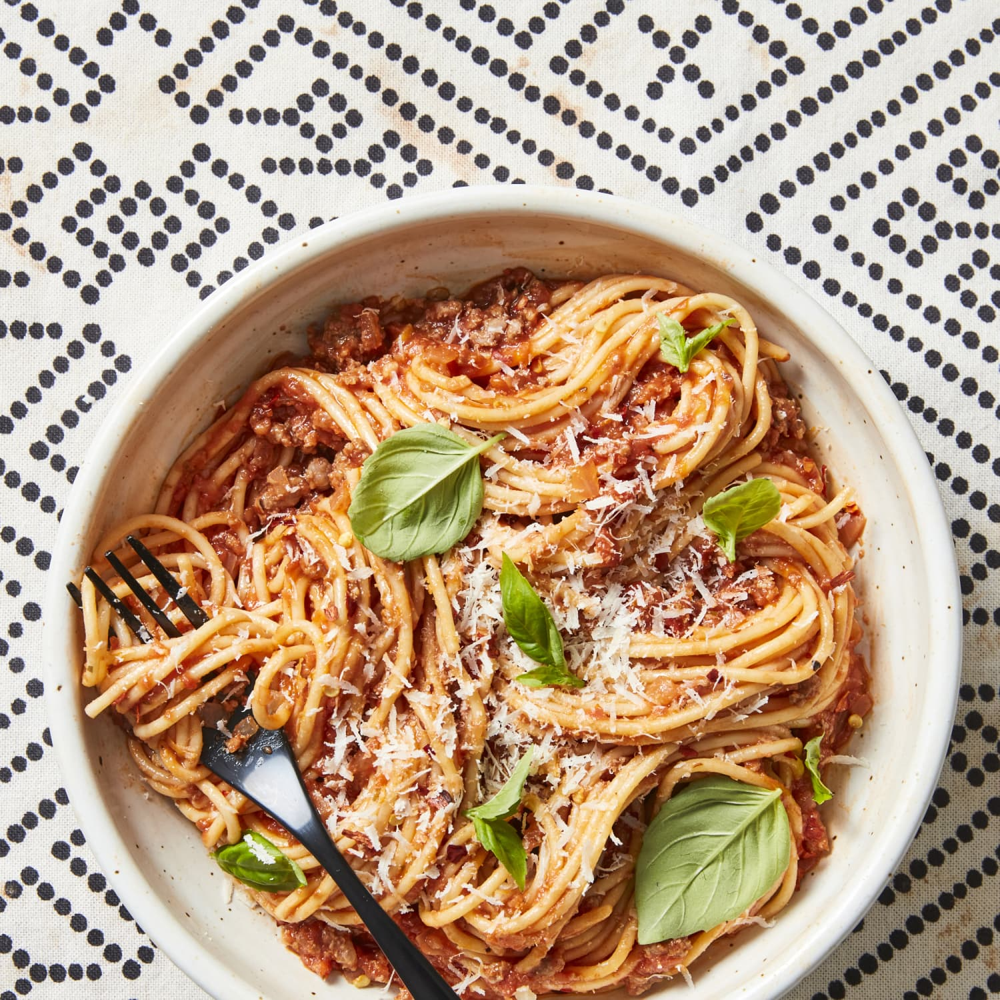

"The first written record of pasta comes from the Talmud in the 5th century AD and refers to dried pasta that could be cooked through boiling,[3] which was conveniently portable.[4] Some historians think that Arabs introduced pasta to Europe during a conquest of Sicily. In the West, it may have first been worked into long, thin forms in Sicily around the 12th century, as the Tabula Rogeriana of Muhammad al-Idrisi attested, reporting some traditions about the Sicilian kingdom.[5]
The popularity of spaghetti spread throughout Italy after the establishment of spaghetti factories in the 19th century, enabling the mass production of spaghetti for the Italian market.[6]
In the United States around the end of the 19th century, spaghetti was offered in restaurants as Spaghetti Italienne (which likely consisted of noodles cooked past al dente, and a mild tomato sauce flavored with easily found spices and vegetables such as cloves, bay leaves, and garlic) and it was not until decades later that it came to be commonly prepared with oregano or basil.[7][8][9]" (Wikipedia)
As you can see, there is such a rich history behind the origins of spaghetti. But, that's probably not what you're here for, right? Let's get to the recipe!
P.S. Don't forget the noodles!!